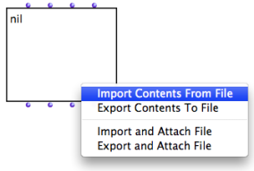
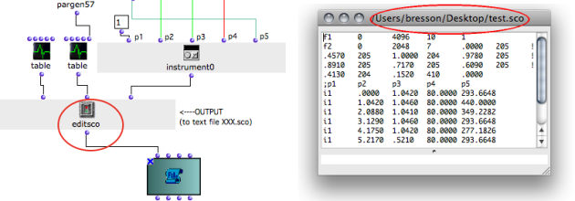
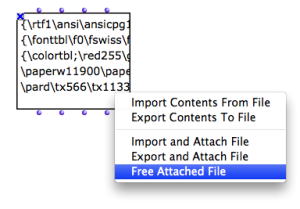

OpenMusic DocumentationHiérarchie de section : OM 6.6 User Manual > Basic Tools > TextFile > Outer Environment
OpenMusic DocumentationHiérarchie de section : OM 6.6 User Manual > Basic Tools > TextFile > Outer Environment
Navigation : page précédente | page suivante
Attention, votre navigateur ne supporte pas le javascript ou celui-ci à été désactivé. Certaines fonctionnalités de ce guide sont restreintes.
TextFile and Outer Environment
Importing / Exporting Contents
The contents of textfile can be imported or exported from / to a **** file on the disk.
Import and Export From a Box

|
To import or export a contents :
|
The imported file appears in the textfile box and in the buffer. |

|
Import or Export from the Editor
To import contents from an external file to the open text editor, select
File / Import From...To export contents, select
File / Savec As...
External File Attachment
Other options allow to attach the object permanently to an external file on the disk .
From the TextFile Box

|
These option are alike "Import" and "Export" options, but they link the content of the object with a file on the hard drive of the computer. |
With a File Pathname
To initialize a textfile with a file :
The textfile is then attached to the corresponding file. |

Connecting a pathname to TextFile
|
About Pathnames
Example : Reading a Pathname
When a box returns a pathname, this pathname can be visualized via a textfile box.

The editsco function from the OM2Csound userlibrary writes a text file – a Csound score – and returns the file pathname.Zoom
{kind=link}
Removing Attachements
To remove a link to a file, select This option is only available if the textfile is already attached to a file. Once the attached file is is "freed", the contents of the textfile is internalized in the patch. |

|
File Modification
Save Command

Inputting data via "exp-list" on append mode.
|
To modify an attached file :
When the object is saved, the related file on the hard drive is modified as well. |
Externalized Contents

The attached file has been deleted. The Listener displays an error message.
|
Contrary to the "import" and "export" options, the
|
Références :
Plan :
- OpenMusic Documentation
- OM 6.6 User Manual
- Introduction
- System Configuration and Installation
- Going Through an OM Session
- The OM Environment
- Visual Programming I
- Visual Programming II
- Basic Tools
- Curves and Functions
- Array
- TextFile
- TextFile Edition
- Outer Environment
- Picture
- Score Objects
- Maquettes
- Sheet
- MIDI
- Audio
- SDIF
- Lisp Programming
- Errors and Problems
- OpenMusic QuickStart
Navigation : page précédente | page suivante
A propos...(c) Ircam - Centre Pompidou